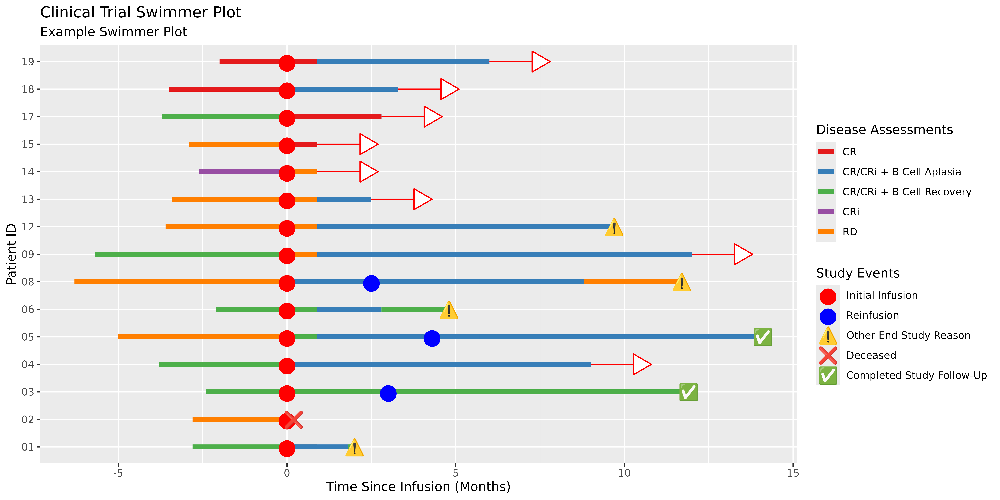

To support some of these visuals, we’ll set up some of the datasets similar to the README:
arrow_data <- patient_data |>
dplyr::left_join(
end_study_events |>
dplyr::select(pt_id, label),
by = "pt_id"
) |>
dplyr::select(pt_id, end_time, label) |>
dplyr::filter(.by = pt_id, end_time == max(end_time)) |>
dplyr::filter(is.na(label)) |>
unique()
all_events <- dplyr::bind_rows(
infusion_events,
end_study_events
)Themeing with ggswim
Here are some example of the themeing functions available in ggswim using the dataset examples from the README:
p <- patient_data |>
ggplot() +
geom_swim_lane(
mapping = aes(
x = start_time, y = pt_id, xend = end_time,
colour = disease_assessment
)
) +
geom_swim_arrow(
data = arrow_data,
mapping = aes(xend = end_time, y = pt_id),
arrow_colour = "red",
arrow_fill = "white"
) +
geom_swim_marker(
data = all_events,
aes(x = time_from_initial_infusion, y = pt_id, marker = label),
size = 5
) +
scale_colour_brewer(
name = "Disease Assessments",
palette = "Set1"
) +
scale_marker_discrete(
glyphs = all_events$glyph,
colours = all_events$colour,
limits = all_events$label,
name = "Study Events"
) +
labs(title = "Clinical Trial Swimmer Plot", subtitle = "Example Swimmer Plot") +
xlab("Time Since Infusion (Months)") +
ylab("Patient ID")
p